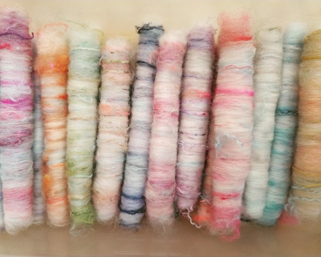
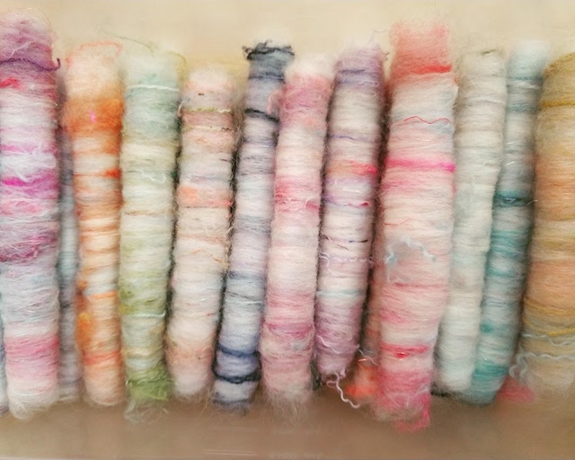

About Me
Reed Keyes is a knitwear designer, fiber arts teacher, and registered dietitian currently studying web development. When she's not hanging out with her family, Reed can be found studying, knitting, spinning yarn, and attempting to build websites!
 
